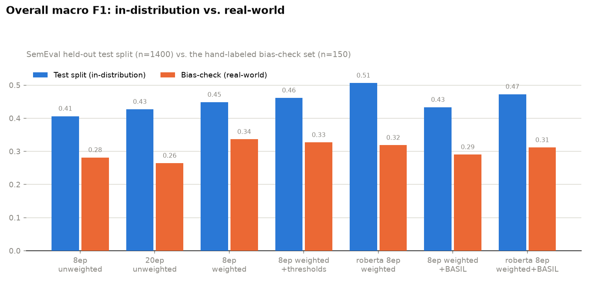
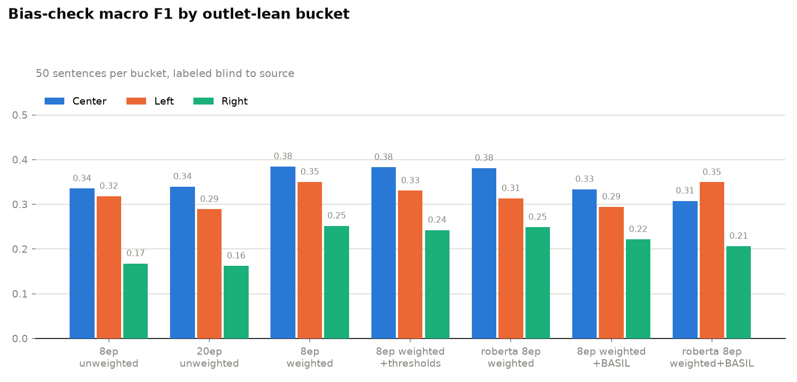
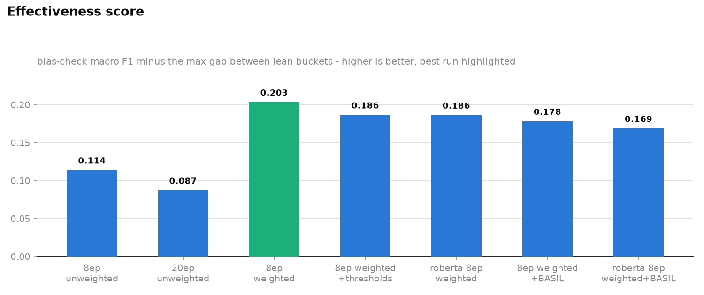
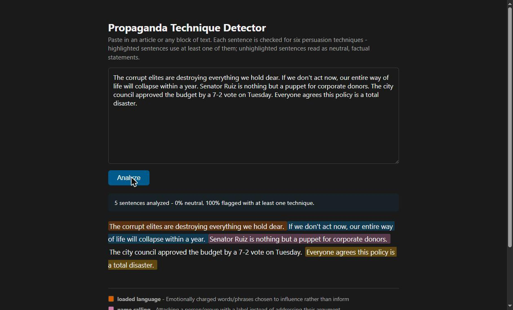

Propaganda Technique Detector
A multi-label classifier for six persuasion techniques, built with an explicit
methodology for catching source bias - not just trained and reported, but
checked. That methodology is now also a standalone toolkit,
bias_audit, that works against any text classifier.
bias_audit: the reusable part
The question underneath this whole project - "did the model learn the task, or
did it learn a proxy for the task instead" - turned out to be more general than
one classifier, so it's now its own small, pip install-able library:
bias_audit. Give it any classifier
(wrapped in a one-method predict_proba adapter) and a labeled,
group-tagged evaluation set, and it reports a per-group F1 breakdown, a
gap-penalized effectiveness score, and a kappa-based check on your own ground
truth - the same three things this page uses below, generalized past outlet lean
to whatever group split you're worried a model latched onto. This repo is now
that library plus its worked example - see its own
page for the API on its own.
The problem
Most propaganda-detection projects train on which outlet published a sentence rather than what the sentence says, which just teaches a model to fingerprint a publication's writing style. I trained only on SemEval-2020 Task 11, where technique spans were annotated by humans reading the text itself, and then built a second, independent check specifically to verify the model actually behaves consistently across outlets of different political lean rather than assuming it.
Labels
Emotionally charged word choice meant to influence, not inform
Attacking a person/group with a label instead of their argument
Overstating or understating scale or importance
Framing built to provoke alarm rather than present evidence
An assertion presented as fact with no evidence given
Verifiable information with no rhetorical framing
Results
Seven training configurations, run to actually understand what moves the numbers rather than just report the best one.



| Config | Test F1 | Bias-check F1 | Max gap | Score |
|---|---|---|---|---|
| 8ep unweighted (baseline) | 0.406 | 0.282 | 0.168 | 0.114 |
| 20ep unweighted | 0.427 | 0.264 | 0.177 | 0.087 |
| 8ep class-weighted | 0.448 | 0.336 | 0.133 | 0.203 |
| 8ep class-weighted + tuned thresholds | 0.461 | 0.327 | 0.140 | 0.186 |
| roberta 8ep class-weighted | 0.506 | 0.319 | 0.132 | 0.186 |
| 8ep class-weighted + BASIL | 0.433 | 0.290 | 0.112 | 0.178 |
| roberta 8ep class-weighted + BASIL | 0.473 | 0.311 | 0.143 | 0.169 |
The effectiveness score is bias-check macro F1 minus the max gap between
lean buckets - a model can't score well by being accurate but unevenly so across
outlet leans. evaluate.py computes it by wrapping the trained model
in a bias_audit.Classifier adapter and calling
bias_audit.audit().
What I actually learned
- 2.5x the training epochs barely moved test F1 and made the bias-check numbers worse - more training wasn't the fix for the rare-label weakness or the lean gap.
- Class-weighted loss was the single biggest win, on every axis at once, including narrowing the lean gap from 0.168 to 0.133.
- A bigger base model bought real accuracy but didn't move the fairness gap at all - model capacity isn't the lever for that specific problem.
- Adding ~7,700 sentences from BASIL narrowed the gap furthest of anything tried, but cost raw accuracy - its labels come from a different task and only cover 2 of the 6 labels.
- Combining the bigger model and the extra data didn't stack the gains - it landed below either improvement alone.
- By the effectiveness score, plain 8-epoch class-weighted distilbert is still the best model trained here.
Checking my own labels for bias
The bias-check ground truth came from one person's judgment. To sanity-check it,
an LLM independently relabeled the same 150 sentences blind - sentence text only,
no outlet, no lean - against the same rubric. Mean per-label Cohen's kappa:
0.426 ("moderate" agreement), with real variation by label -
name_calling and appeal_to_fear agreed well,
exaggeration_minimization barely agreed at all. That's a real signal
about which labels are harder to apply consistently, not just a labeling-effort
problem, and it means the bias-check numbers above should be read with that noise
in mind.
The app
A small Flask app serves the model: paste text in, each sentence gets highlighted by its top predicted technique, with a summary of what fraction of the input was flagged.

Known limitations
- The model is undertrained for production use - 8 epochs on ~12.6k sentences from essentially one dataset.
- Base-model pretraining bias is out of scope - I have no practical way to inspect or retrain
distilbert-base-uncased's own training corpus, and SemEval's released files strip outlet metadata so I can't audit that source either. - 150 sentences (50/lean) in the bias-check set is a sanity check, not a statistically powered study.
- Closing the gap further needs more labeled data on this exact taxonomy - epochs, threshold tuning, and base model size all plateaued quickly.